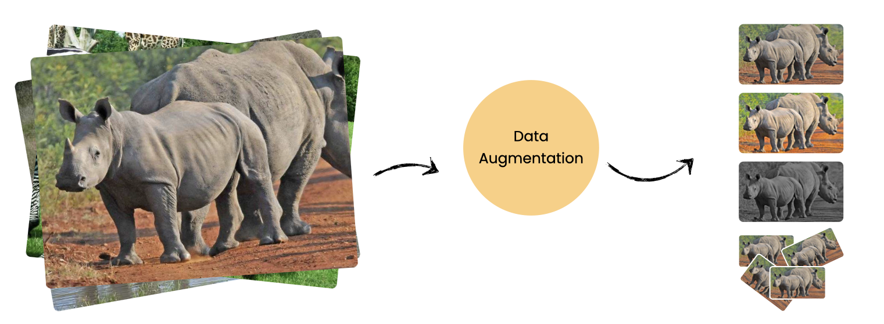

African WildLife Classification
Unleash your creativity and technical skills in the "Wild Augmentations" Challenge! Your mission is to take the African wildlife images and transform them using the power of data augmentation with Keras. Experiment with a rich array of techniques – from rotations and zooms to color adjustments, shears, translations, and even random erasing – to generate diverse and realistic variations of the original dataset. Your submissions will be evaluated based on the diversity and plausibility of your augmented images, as well as the clarity and quality of your Python code.

Ranking Procedure
- 100 points for completing all steps correctly.
- 75 points for completing 3 steps correctly.
- 50 points for completing 2 steps correctly.
- 25 points for completing 1 step correctly.
- 0 points for completing 0 steps.
Legend:
A (90%-100%)
B (80%-89%)
C (70%-79%)
D (60%-69%)
E (50%-59%)
F (<50%)